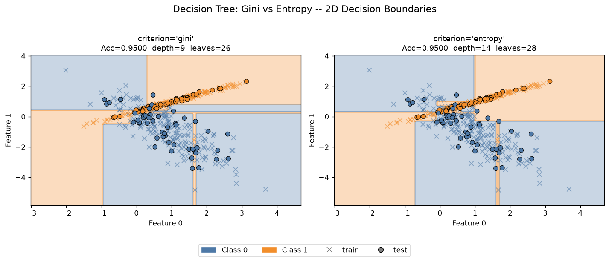

Árvore CART construída manualmente (sem sklearn.tree): impureza, busca de split, recursão e predição do zero. Os dois critérios comparados no mesmo dataset 2D (500 amostras, split 80/20).
acurácia empatada no multi-seed (10 seeds)
profundidade da árvore
acurácia de treino → overfitting nos dois
G(t) = 1 − Σ p_k²Máx. 0.5 (binário). Puro → 0.
H(t) = − Σ p_k·log2(p_k)
IG = H(pai) − Σ (|filho|/|pai|)·H(filho)Máx. 1.0. Maior curvatura em p≈0.5.
A cada nó, busca gulosa: escolhe (feature, limiar) que maximiza a redução de impureza. Cresce até folhas puras.

| Métrica | Gini | Entropy |
|---|---|---|
| Test Acc | 0.960 | 0.940 |
| Precision | 0.942 | 0.923 |
| Recall | 0.980 | 0.960 |
| F1 | 0.961 | 0.941 |
| Profundidade | 9 | 13 |
| Folhas | 26 | 27 |
Tabela da seed=42 (ilustração). No multi-seed (10 seeds, teste 400): Gini 0.943±0.033 ≈ Entropy 0.945±0.033 — a vantagem do Gini é ruído (intervalos se sobrepõem, o ranking até inverte).
depth_vs_accuracy mostra que profundidades menores já atingem o platô — os níveis extras são supérfluos.max_depth, min_samples_split, poda e validação cruzada k-fold.